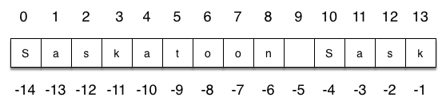

29. More Information About Strings¶
Quick Overview of Day
Explore string operators, index values, length of strings, and string slicing.
- CS20-CP1 Apply various problem-solving strategies to solve programming problems throughout Computer Science 20.
- CS20-FP1 Utilize different data types, including integer, floating point, Boolean and string, to solve programming problems.
- CS20-FP2 Investigate how control structures affect program flow.
- CS20-FP3 Construct and utilize functions to encapsulate reusable pieces of code.
Throughout the portion of the course, we have used strings to represent words or phrases that we wanted to print out. Our definition was simple: a string is simply some characters inside quotes. We will now explore strings in much more detail.
29.1. A Collection Data Type¶
So far we have seen built-in types like: int, float,
bool, str and we’ve seen lists.
int, float, and
bool are considered to be simple or primitive data types because their values are not composed
of any smaller parts. They cannot be broken down.
On the other hand, strings and lists are different from the others because they
are made up of smaller pieces. In the case of strings, they are made up of smaller
strings each containing one character.
Types that are comprised of smaller pieces are called collection data types. Depending on what we are doing, we may want to treat a collection data type as a single entity (the whole), or we may want to access its parts. This ambiguity is useful.
Strings can be defined as sequential collections of characters. This means that the individual characters that make up the string are assumed to be in a particular order from left to right.
A string that contains no characters, often referred to as the empty string, is still considered to be a string. It is simply a sequence of zero characters and is represented by ‘’ or “” (two single or two double quotes with nothing in between).
29.2. Concatenation Reminder¶
As we have seen before, you cannot perform mathematical operations on strings, even if the
strings look like numbers. The one exception to this rule is that the + operator does work with strings, but for strings, the + operator represents concatenation, not addition. As we have learned previously, concatenation means joining the two operands by linking them end-to-end. For example:
29.3. Index Operator: Working with the Characters of a String¶
The indexing operator (Python uses square brackets to enclose the index) selects a single character from a string. The characters are accessed by their position or index value. For example, in the string shown below, the 14 characters are indexed left to right from postion 0 to position 13.
It is also the case that the positions are named from right to left using negative numbers where -1 is the rightmost index and so on. Note that the character at index 6 (or -8) is the blank character.
The expression school[2] selects the character at index 2 from school, and creates a new
string containing just this one character. The variable m refers to the result.
Remember that computer scientists often start counting
from zero. The letter at index zero of "Luther College" is L. So at
position [2] we have the letter t.
If you want the zero-eth letter of a string, you just put 0, or any expression with the value 0, in the brackets. Give it a try.
The expression in brackets is called an index. An index specifies a member of an ordered collection. In this case the collection of characters in the string. The index indicates which character you want. It can be any integer expression so long as it evaluates to a valid index value.
Note that indexing returns a string — Python has no special type for a single character. It is just a string of length 1.
Check your understanding
- t
- Index locations do not start with 1, they start with 0.
- h
- Yes, index locations start with 0.
- c
- s[-3] would return c, counting from right to left.
- Error, you cannot use the [ ] operator with a string.
- [ ] is the index operator
more-info-about-strings1: What is printed by the following statements?
s = "python rocks"
print(s[3])
- tr
- Yes, indexing operator has precedence over concatenation.
- ps
- p is at location 0, not 2.
- nn
- n is at location 5, not 2.
- Error, you cannot use the [ ] operator with the + operator.
- [ ] operator returns a string that can be concatenated with another string.
more-info-about-strings2: What is printed by the following statements?
s = "python rocks"
print(s[2] + s[-5])
29.4. Length¶
The len function, when applied to a string, returns the number of characters in a string.
To get the last letter of a string, you might be tempted to try something like this:
That won’t work. It causes the runtime error
IndexError: string index out of range. The reason is that there is no
letter at index position 6 in "Banana".
Since we started counting at zero, the six indexes are
numbered 0 to 5. To get the last character, we have to subtract 1 from
the length. Give it a try in the example above.
Alternatively in Python, we can use negative indices, which count backward from the
end of the string. The expression fruit[-1] yields the last letter,
fruit[-2] yields the second to last, and so on. Try it!
Most other languages do not allow the negative indices, but they are a handy feature of Python!
Check your understanding
- 11
- The blank counts as a character.
- 12
- Yes, there are 12 characters in the string.
more-info-about-strings3: What is printed by the following statements?
s = "python rocks"
print(len(s))
- o
- Take a look at the index calculation again, len(s)-5.
- r
- Yes, len(s) is 12 and 12-5 is 7. Use 7 as index and remember to start counting with 0.
- s
- s is at index 11
- Error, len(s) is 12 and there is no index 12.
- You subtract 5 before using the index operator so it will work.
more-info-about-strings4: What is printed by the following statements?
s = "python rocks"
print(s[len(s)-5])
- c
- Yes, 3 characters from the end.
- k
- Count backward 3 characters.
- s
- When expressed with a negative index the last character s is at index -1.
- Error, negative indices are illegal.
- Python does use negative indices to count backward from the end.
more-info-about-strings5: What is printed by the following statements?
s = "python rocks"
print(s[-3])
29.5. The Slice Operator¶
A substring of a string is called a slice. Selecting a slice is similar to selecting a character:
The slice operator [n:m] returns the part of the string from the n’th character
to the m’th character, including the first but excluding the last. In other words, start with the character at index n and
go up to but do not include the character at index m.
This
behavior may seem counter-intuitive but if you recall the range function, it did not include its end
point either.
If you omit the first index (before the colon), the slice starts at the beginning of the string. If you omit the second index, the slice goes to the end of the string.
There is no Index Out Of Range exception for a slice. A slice is forgiving and shifts any offending index to something legal.
What do you think fruit[:] means?
Check your understanding
- python
- That would be s[0:6].
- rocks
- That would be s[7:].
- hon r
- Yes, start with the character at index 3 and go up to but not include the character at index 8.
- Error, you cannot have two numbers inside the [ ].
- This is called slicing, not indexing. It requires a start and an end.
more-info-about-strings6: What is printed by the following statements?
s = "python rocks"
print(s[3:8])
- rockrockrock
- Yes, rock starts at 7 and goes through 10. Repeat it 3 times.
- rock rock rock
- Repetition does not add a space.
- rocksrocksrocks
- Slicing will not include the character at index 11. Just up to it (10 in this case).
- Error, you cannot use repetition with slicing.
- The slice will happen first, then the repetition. So it is ok.
more-info-about-strings7: What is printed by the following statements?
s = "python rocks"
print(s[7:11] * 3)
29.6. Practice Problems¶
Try the following practice problems. You can either work directly in the textbook, or use Thonny. Either way, copy/paste your finished code into Thonny and save your solution into your Computer Science 20 folder when you finish!
29.6.1. Con Cat¶
Create a program that takes in the name of a cat, then prints out a hello message. For example, if the user types in Garfield, your program could print something like Good to see you, Garfield!. Be sure to use concatenation in your solution!
29.6.2. Duckling Names¶
In Robert McCloskey’s book Make Way for Ducklings, the names of the ducklings are Jack, Kack, Lack, Mack, Nack, Ouack, Pack, and Quack. This loop tries to output these names in order.
Of course, that’s not quite right because Ouack and Quack are misspelled. See if you can fix it without changing the value of either the prefixes or suffix variables!
29.6.3. First Letter of a Word¶
Note
The only thing you need to do for this question is to complete the function definition! You do not need to call the function, as that will be done automatically for you.
Create a function with a single parameter word that returns True if the word begins with the letter “t” or “c”.
Examples:
starts_with_tc("thing") → True
starts_with_tc("concatenation") → True
starts_with_tc("warman") → False
29.6.4. Password Length¶
Note
The only thing you need to do for this question is to complete the function definition! You do not need to call the function, as that will be done automatically for you.
Create a function with a single parameter password that returns True if the password is between 8 and 32 characters (inclusive), and False otherwise. Please note there is much more to a strong password than just the length of the string!
Examples:
password_length("123456789") → True
password_length("qwerty") → False
password_length("cray-topnotch-tampa-anthem-trial") → True
29.6.5. Removing the Start and End¶
Create a program that takes in three inputs from the user:
- a word/sentence
- a starting number
- an ending number
After taking in the input, the program should print out a portion of the word/sentence that was entered. For example, if the word the user entered was saskatchewan, the starting number was 3 and the ending number was 2, the program should print katchew. Notice that in the output, it is the same as the word, except that the first 3 characters and last 2 characters have been removed.
To be sure you understand the challenge, consider the following example:
- word = “unimaginatively”
- starting_number = 3
- ending_number = 2
- output should be
maginative